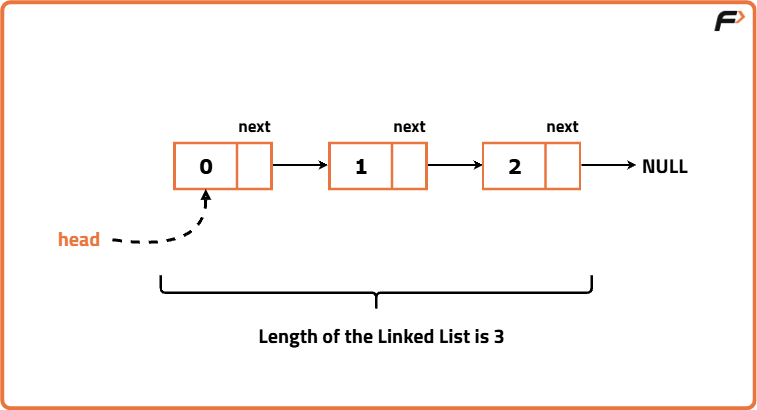
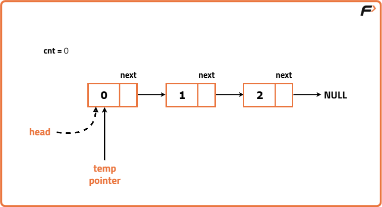
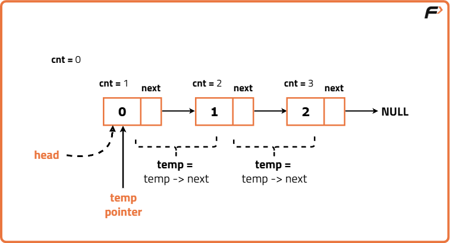
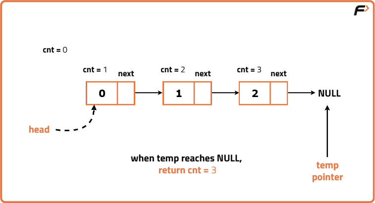

Archived from https://takeuforward.org/linked-list/find-the-length-of-a-linked-list
Problem Statement: Given the head of a linked list, print the length of the linked list.
Examples
Input: 0->1->2 Output: 3Explanation: The list has a total of 3 nodes, thus the length of the list is 3.

Input: 12->5->8->7Output: 4Explanation: The list has a total of 4 nodes, thus the length of the list is 4.
Disclaimer:
It's highly recommend trying to
solve it before looking at the solution.
Approach
Algorithm
The simple idea to solve this problem is to traverse the linked list and count the number of nodes using a counter.
Initialize a temporary pointer to the head of the list. The temporary pointer will be used to traverse the list.
Traverse the linked list until the the current node is not null.
At every node, increment the counter to count number of nodes.
After reaching the end of the linked list, return the count. This will be your total number of nodes which is the length of the linked list.



Code
#include <bits/stdc++.h>
using namespace std;
// Node class to represent each element in the linked list
class Node {
public:
int data;
Node* next;
// Constructor to initialize data and next pointer
Node(int data1) {
data = data1;
next = nullptr;
}
};
// Solution class containing the method to find length
class Solution {
public:
// Function to find the length of the linked list
int lengthOfLinkedList(Node* head) {
// Initialize counter to 0
int count = 0;
// Initialize a temporary pointer to head
Node* temp = head;
// Traverse the linked list
while (temp != nullptr) {
// Increment count for each node
count++;
// Move to the next node
temp = temp->next;
}
// Return the total count
return count;
}
};
int main() {
// Creating a sample linked list
Node* head = new Node(10);
head->next = new Node(20);
head->next->next = new Node(30);
// Create Solution object
Solution obj;
// Find and print the length of linked list
cout << "Length of Linked List: "
<< obj.lengthOfLinkedList(head) << endl;
return 0;
}
// Node class to represent each element in the linked list
class Node {
int data;
Node next;
// Constructor to initialize data and next pointer
Node(int data1) {
data = data1;
next = null;
}
}
// Solution class containing the method to find length
class Solution {
// Function to find the length of the linked list
public int lengthOfLinkedList(Node head) {
// Initialize counter to 0
int count = 0;
// Initialize a temporary pointer to head
Node temp = head;
// Traverse the linked list
while (temp != null) {
// Increment count for each node
count++;
// Move to the next node
temp = temp.next;
}
// Return the total count
return count;
}
}
// Main class to run the program
public class Main {
public static void main(String[] args) {
// Creating a sample linked list
Node head = new Node(10);
head.next = new Node(20);
head.next.next = new Node(30);
// Create Solution object
Solution obj = new Solution();
// Find and print the length of linked list
System.out.println("Length of Linked List: "
+ obj.lengthOfLinkedList(head));
}
}
# Node class to represent each element in the linked list
class Node:
# Constructor to initialize data and next pointer
def __init__(self, data1):
self.data = data1
self.next = None
# Solution class containing the method to find length
class Solution:
# Function to find the length of the linked list
def lengthOfLinkedList(self, head):
# Initialize counter to 0
count = 0
# Initialize a temporary pointer to head
temp = head
# Traverse the linked list
while temp is not None:
# Increment count for each node
count += 1
# Move to the next node
temp = temp.next
# Return the total count
return count
# Driver code
if __name__ == "__main__":
# Creating a sample linked list
head = Node(10)
head.next = Node(20)
head.next.next = Node(30)
# Create Solution object
obj = Solution()
# Find and print the length of linked list
print("Length of Linked List:",
obj.lengthOfLinkedList(head))
// Node class to represent each element in the linked list
class Node {
// Constructor to initialize data and next pointer
constructor(data1) {
this.data = data1;
this.next = null;
}
}
// Solution class containing the method to find length
class Solution {
// Function to find the length of the linked list
lengthOfLinkedList(head) {
// Initialize counter to 0
let count = 0;
// Initialize a temporary pointer to head
let temp = head;
// Traverse the linked list
while (temp !== null) {
// Increment count for each node
count++;
// Move to the next node
temp = temp.next;
}
// Return the total count
return count;
}
}
// Driver code
let head = new Node(10);
head.next = new Node(20);
head.next.next = new Node(30);
// Create Solution object
let obj = new Solution();
// Find and print the length of linked list
console.log("Length of Linked List:",
obj.lengthOfLinkedList(head));
Complexity Analysis
Time Complexity: O(N), we traverse the entire linked list once to find the total number of nodes. Space Complexity: O(1) , we use fixed number of pointers and variables to find the length of linked list.